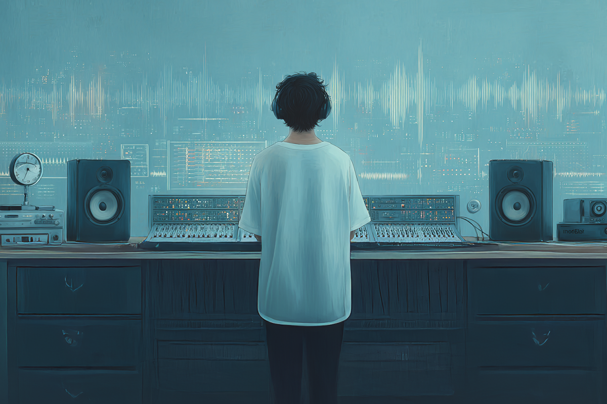
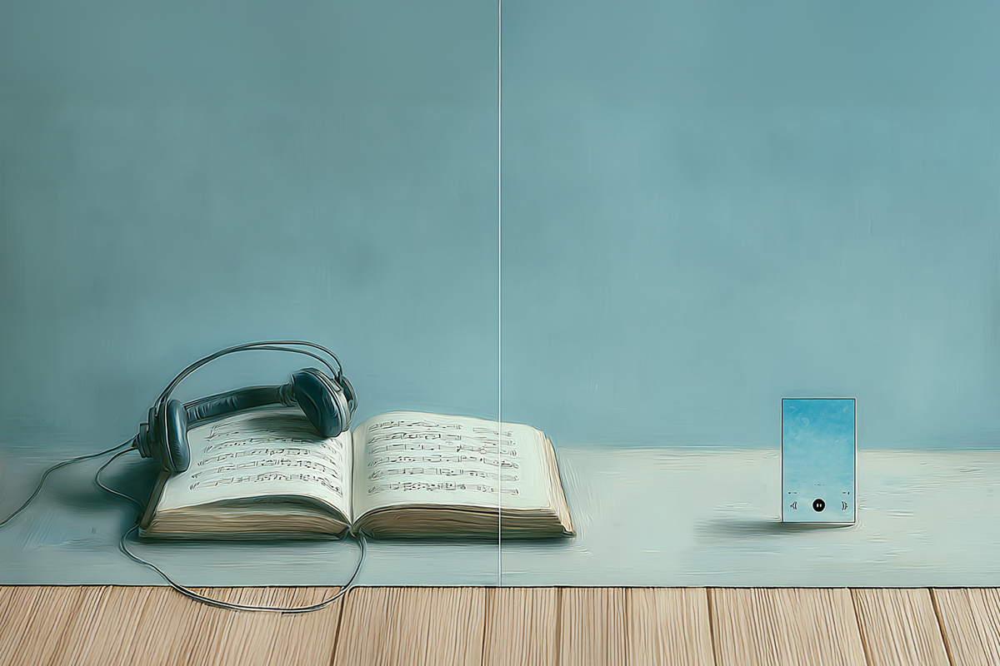
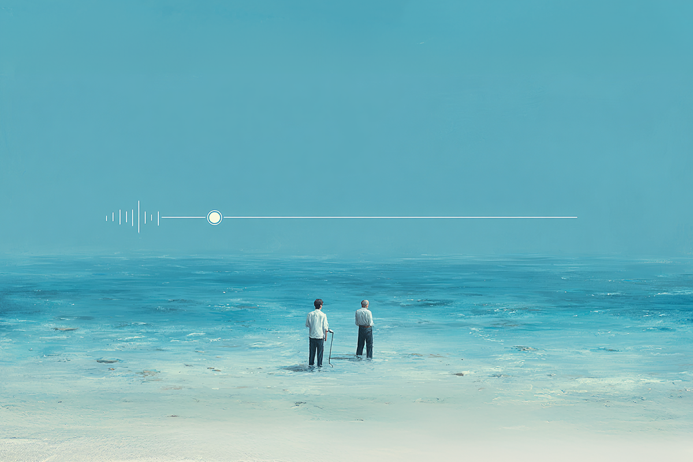
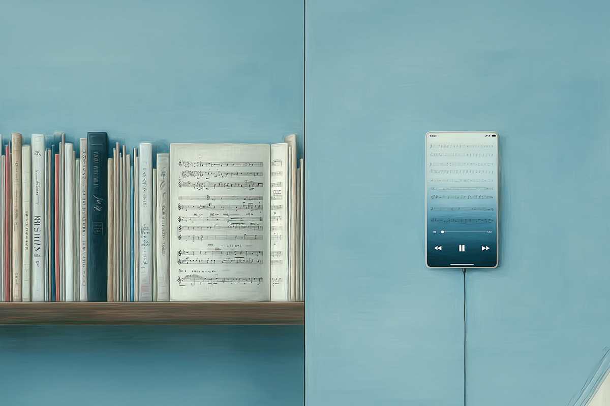
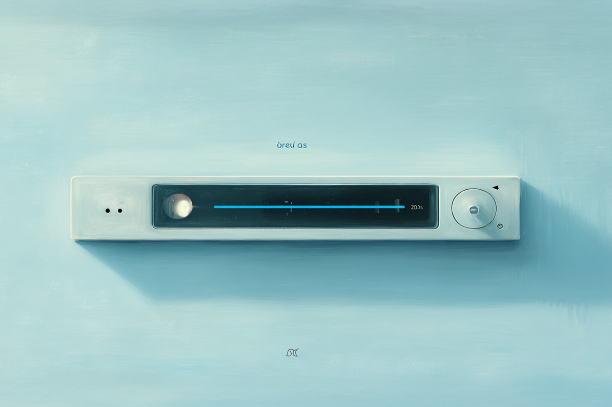

¿Te has preguntado por qué estos últimos años las canciones parece que cada vez son más cortas? O quizás no te lo habías preguntado hasta ahora, que lo estoy poniendo en la palestra.
Pero, es verdad, no es producto de la imaginación de una sociedad que cada vez tiene una capacidad de retención más corta y que está día a día bombardeada por cantidades estratosféricas de información.
Las canciones SI son más cortas que antes. Lo que antes suponía casi un interludio entre canciones dentro de un álbum que demoraba años en salir a la luz, ahora es el canon: un disco de 14 canciones puede durar media hora.
Pero ¿Qué pasó en el camino? ¿Qué fue lo que terminó transformando el producto final que escuchamos en el día a día? Acá te podemos dar algunas pistas sobre el porqué tras el cambio musical en este mercado que, día a día, se vuelve más feroz.

En redes sociales todo debe ser tan rápido como sea posible, recordemos que su finalidad es retenerte en un scroll perpetuo, y que por lo mismo se premia la brevedad. Como la manera de hacerse conocido rápidamente en a través de las redes sociales, parecía el paso más natural que los creadores comenzaran a ajustar sus producciones a lo que buscan los usuarios en línea y las mismas cabezas tras la creación de estas mismas redes.
Como las canciones son más cortas, las reproducciones tienden a ser completas, no solo una parte del sonido. Además, mientras más streamings hay en una canción (qué ¡oh, bondades! No se vuelve tediosa para quienes no pueden retener información por más de dos minutos), más te premian las plataformas actuales posicionando al artista en lo más elevado del algoritmo.
Claro, esto sucede cuando los artistas emergentes están buscando meterse en el mainstream. Con los cantantes que ya tienen una base de fans, es mucho más sencillo posicionarse rápidamente en las redes, sin necesidad de crear canciones realmente cortas (aunque muchos también están cayendo en estos vicios algorítmicos).

Y la retención, tampoco. Como les contaba en el inicio, ya no podemos pedir mucho más a cerebros que cada vez están más acostumbrados al consumo rápido y a la información resumida: todo lo que consumimos es en un formato vídeo vertical en 9:16.
Por lo mismo, la introducción de las canciones comienza con los coros y, si engancha, es posible que los singles sean exitosos en las plataformas. Y con el éxito en las plataformas es mucho más fácil lograr sobresalir en las listas musicales.
En pocas palabras, vamos al grano. En el universo de lo inmediato, es necesario ponerle nitro con tal de seguir el ritmo de las redes. Aunque, claro, no siempre tienes que estar dispuesto a renunciar a lo que te mueve como músico (de hecho, ¡por favor no lo hagas!).

Con lo inmediato, vienen los singles. No es necesario armar un disco completo para llegar al estrellato, solo basta con un par de canciones cortas y virales. Con esto listo, los artistas pueden darse el gusto de encerrarse en la sala de grabación con el tiempo que estimen necesario sin necesidad de apurar el proceso creativo.
Con esto, lo que antes se veía como una necesidad entre los artistas, ahora aparece más como una opción. Además, con el desarrollo de la tecnología, cualquiera pueda grabar una canción en casa y subirla a las redes con algún vídeo corto como promoción. Basta que las personas correctas conecten con estos trabajos para que el algoritmo los suba como espuma, se terminen viralizando, y lleguen “orgánicamente” a todos los rincones del mundo.

Repitamos estrofas, alarguemos coros, tengamos una melodía pegajosa y digamos una y otra vez alguna palabra o sonido sin temor a que aburra. La fórmula es bastante simple en este universo de lo inmediato. Por eso, pareciera que cada single es un loop, esclavos de un sonido que se repite y que, de esa forma, no podremos sacar de nuestra cabeza: más fácil para aprendérsela, más fácil que el resto de los usuarios enganche sin querer.
El K-pop es el mejor ejemplo de ello. De la nada, personas que no tenían ningún remoto interés por el pop coreano comenzaron a compartir las canciones de moda, esto siguiendo los patrones que el algoritmo dibuja como correctos. Por eso ahora se vuelve normal escuchar singles cortísimos, en otro idioma, decorando sonoramente vídeos de personas famosas y que, ciertamente, poco y nada saben de lo que están escuchando o lo que significan las letras de las canciones. Simplemente, están sirviendo al panorama más amplio, a lo que las redes sociales premian y a lo que se termina replicando a través de millones de vídeos en TikTok, Instagram, Facebook o YouTube.
No podemos negar que el hecho de que el arte de hacer música se esté sometiendo a este tipo de tratamiento, termina molestando a los artistas más apegados a las viejas costumbres, a cuando encerrarse a crear era visto como una sesión de introspección y de ensayo y error. Cuando se pensaba más en armar algo con harta cabeza más que una pieza de consumo que es desechada a las dos semanas.
Todo está cambiando, aunque es necesario ver el vaso medio lleno: no es la primera vez que los artistas se enfrentan a los nuevos desafíos de la modernidad.
 Cultura
CulturaSé que suena raro hablar de calor extremo mientras en Chile todos están buscando la parka más gruesa del clóset.
 Cultura
CulturaEl hecho de que estemos entrando al mes de julio no se puede creer. Pero lo que tampoco se puede creer es la cantidad de artistas que han…
 Cultura
CulturaCuando hablamos de trabajos clásicos de la música chilena, siempre se nombran los discos de Violeta Parra, Víctor Jara, Los Jaivas o…